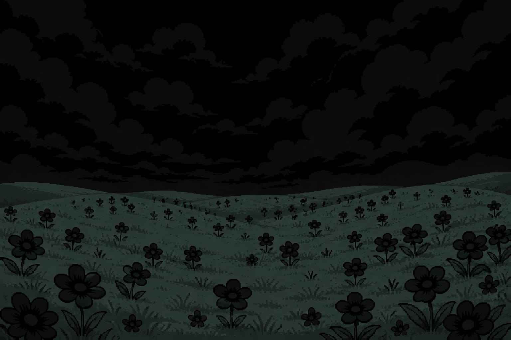

SELETOR DE EQUIPE
FUNDOS
MUSICAS E SOUND EFFECTS
STATUS DE JOGO
Capítulos ▾
← Anterior
Próximo →
Escolher fundo
✕
Fundo automático muda conforme o ambiente descrito. Escolha um fundo para manter fixo.
🌙
👻